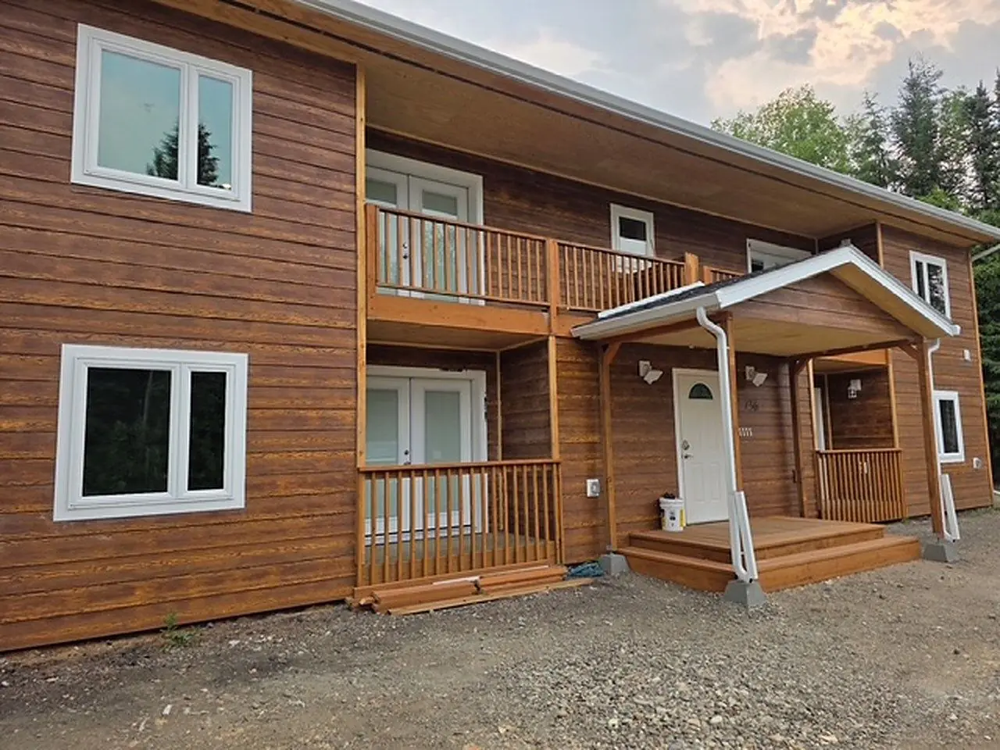

Fire damage restoration in North Pole, AlaskaFrom burned out
to rebuilt, in North Pole.
We have rebuilt fire-damaged buildings right here in North Pole, including a fourplex that went from a burned shell back to rentable units. Edstrom Construction secures the building, removes what the fire and smoke ruined, cleans what can be saved, and rebuilds as a licensed general contractor, so you aren't passing the job between a cleanup company and a builder.
North Pole
Fire risks in North Pole homes
Winter heating is where most of what we see starts.
Local know-how
Smoke in a tight Alaska house
Interior Alaska homes are built tight to hold heat, and that same tightness holds smoke. Odor settles into insulation, ductwork and framing, not just walls and furniture. That's why we remove smoke-damaged insulation and treat framing instead of only painting over it.
See the full North Pole fourplex rebuild and our process on the main fire and smoke restoration page.
How it works
What to expect.
- 01
Secure
We board up openings and protect the structure from weather.
- 02
Remove and clean
Burned and smoke-damaged materials come out; salvageable surfaces are cleaned.
- 03
Document
We write a line-item estimate and meet your adjuster on site.
- 04
Rebuild
We rebuild framing, systems coordination and finishes as the general contractor.
Questions
Straight answers.
Do you handle the whole job or just cleanup?
The whole job. Edstrom is a licensed general contractor, CONG35843, so we handle board-up, demolition, cleaning and the rebuild.
Have you done fire rebuilds in North Pole?
Yes. Our project gallery includes a North Pole fourplex we rebuilt after a fire, from the burned exterior to finished kitchens, baths and stairwells.
Will you work with my insurance adjuster?
Yes. We document the damage, meet your adjuster and bill covered work directly. Your insurer decides coverage and payment.
Can smoke odor be fully removed?
In most cases, yes, by removing smoke-damaged porous materials and cleaning and sealing the structure. We tell you honestly what can be saved.
Coverage and payment are decided by your policy and your insurance company. Edstrom Construction is a licensed general contractor, not a public adjuster, and an estimate is not a guarantee of final cost.
Service area
North Pole and the rest of the Fairbanks area.
Edstrom Construction Co., LLC works in Fairbanks, North Pole and Fort Wainwright from our shop at 2135 Richardson Hwy, North Pole, AK 99705. Call (907) 488-0452 or email office@edstromak.com.
- Fairbanks
- North Pole
- Fort Wainwright